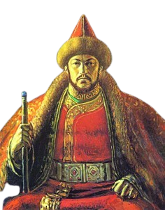
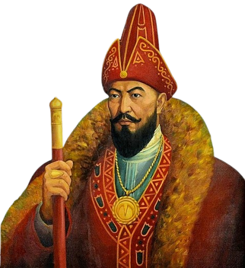
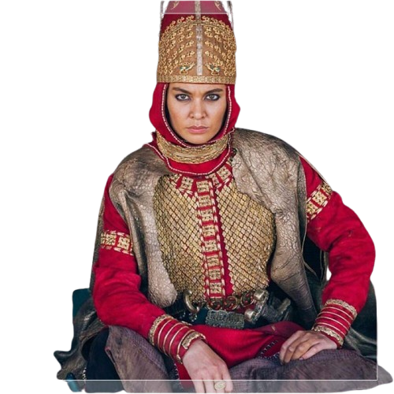
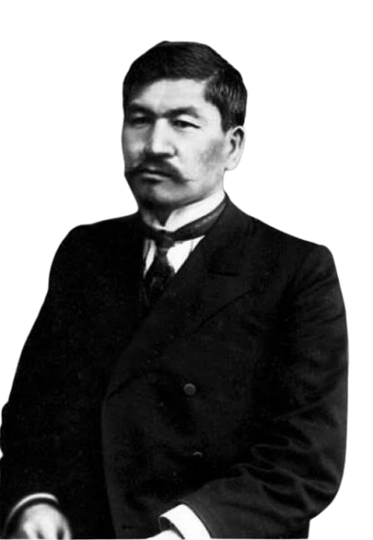

Қасым Хан
Қазақ Хандығының іргетасын жалғастырушы, Батыр
Видеоны қосуҰлттық рухани мұра порталы
Ұлы ойшылдар мұрасы — ұрпақтан ұрпаққа жалғасқан құндылық
Әр картаны басып, олардың өмірі мен мұрасы туралы қысқа бейнефильмді көріңіз.

Қазақ Хандығының іргетасын жалғастырушы, Батыр
Видеоны қосу
Қазақ хандығының ұлы ханы, әйгілі қолбасшы, көрнекті мемлекет қайраткері және дипломат.
Видеоны қосу
Ежелгі массагет тайпаларының ұлы патшайымы, шетел басқыншыларына (Кир патшаға) қарсы күрескен ержүрек жауынгер әрі қолбасшы.
Видеоны қосу
Алаш қозғалысының көшбасшысы, Алашорда үкіметінің төрағасы, көрнекті қоғам және мемлекет қайраткері, ғалым әрі публицист
Видеоны қосуТарихи тұлғалар туралы білімді ойын түрінде бекітіңіз — батырманы басып, сәйкес ойынды ашыңыз.
Батырманы басып, әр бұйымды үш өлшемде айналдырып қарап, тарихымен танысыңыз.
Орал қаласы мен оның тарихи тұлғалары туралы білімді тексеріңіз. Жалпы ұпай — 10, сертификат алу үшін кемінде 7 ұпай жинау керек.
I. Тұлғаларды сәйкестендіріңіз Алдымен батырманы, содан кейін оған сәйкес анықтаманың қасындағы бос ұяшықты басыңыз
1773–1775 жылдардағы шаруалар көтерілісінің жетекшісі, Оралда штабы болған
Балалық шағы мен ақын ретіндегі шығармашылық жолы Оралмен тығыз байланысты татар классигі
Ұлы Отан соғысының батыры, Оралда өсіп-өнген пулеметші қыз
«Тынық Дон» романының авторы, соғыс жылдарында Орал өңірінде тұрып, шығармалар жазған жазушы
II. Дұрыс жауапты таңдаңыз
1. Орал қаласы қандай екі құрлықтың шекарасында немесе түйіскен жерінде орналасқан?
2. 1833 жылы «Пугачев бүлігінің тарихы» еңбегіне мәлімет жинау үшін Оралға арнайы келген орыс классигі кім?
3. 1775 жылы Орал қаласының бұрынғы «Яицкий городок» атауын өзгерту туралы жарлық шығарған Ресей патшайымы кім?
4. Ұлы Отан соғысы жылдарында мергендігімен көзге түскен, Кеңес Одағының Батыры атанған, Оралдағы медициналық училищені бітірген қазақ қызы:
5. Орал қаласы Батыс Қазақстан облысының қай бөлігінде орналасқан және оның жанынан өтетін басты кеме жүзетін өзен қайсысы?
Ұпайыңыз: 0/10
Жүзіңізден, руыңыздан бастап, жетінші атаңыздан өзіңізге дейінгі шежіре тізбегін толтырыңыз.